Префектура Тояма · Имидзу и Уодзу · еда
Красный краб залива Тояма: бэни-дзуваи, дневные торги Синминато и где его попробовать
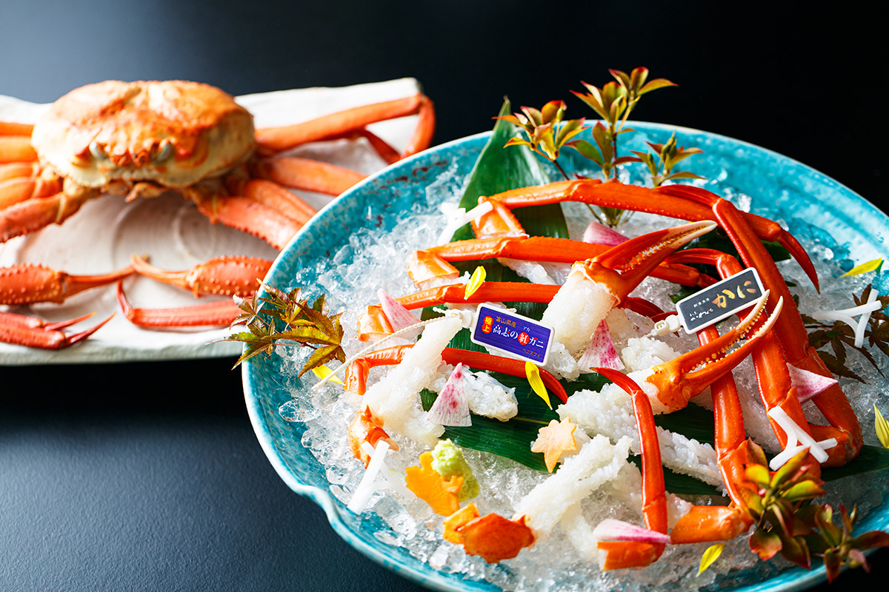
Зимой на побережье Японского моря все ждут краба, но в префектуре Тояма сезон открывается раньше, 1 сентября. В этот день выходят на лов красного краба бэни-дзуваи, который живёт на глубине от 500 метров и ярко-красный ещё до варки.
Глубина
Краб из ледяной воды
Залив Тояма один из самых глубоких в Японии. Под верхними слоями здесь лежит холодная собственная глубинная вода Японского моря, которая на дне уходит на глубину до 1200 метров. Обычный краб дзуваи живёт на глубине от 200 до 500 метров, а его родственник бэни-дзуваи спускается гораздо ниже, от 500 до 2700 метров. Вода там прогревается всего до 0,5–1 градуса, еды мало, и считается, что бэни-дзуваи появился как вид, приспособленный именно к таким суровым условиям.
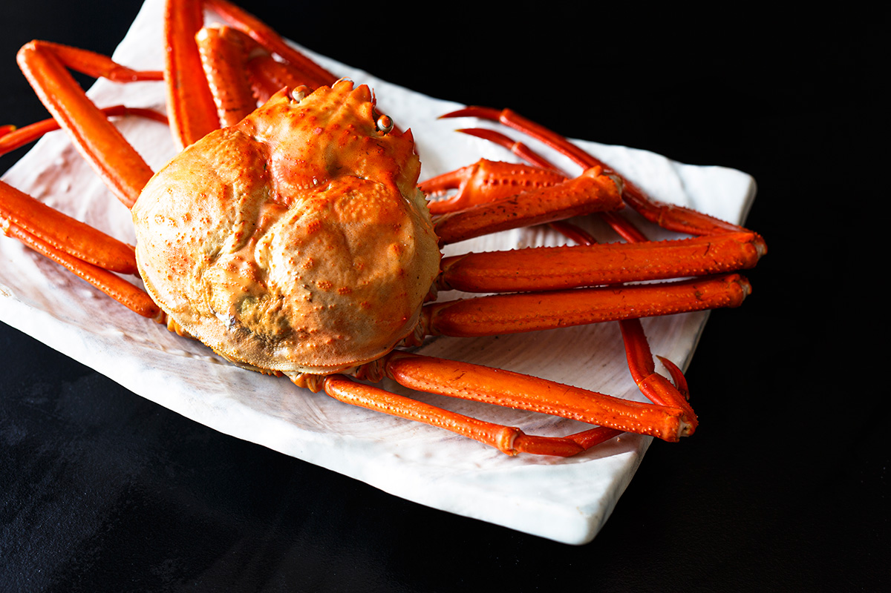
Внешне он очень похож на обычного дзуваи, но весь гораздо краснее, а у самцов длинные ноги. Панцирь и ноги у него красные ещё до варки. Мясо плотное и сладкое, а крабовая «мисо», внутренности под панцирем, густая и насыщенная. По вкусу местный бэни-дзуваи не уступает дзуваи, а стоит заметно дешевле: в сезон варёных крабов продают даже в обычных супермаркетах. Его кладут в тяванмуси, делают из него крабовый гратен, но свежего и хорошего краба здесь предпочитают готовить как можно проще.
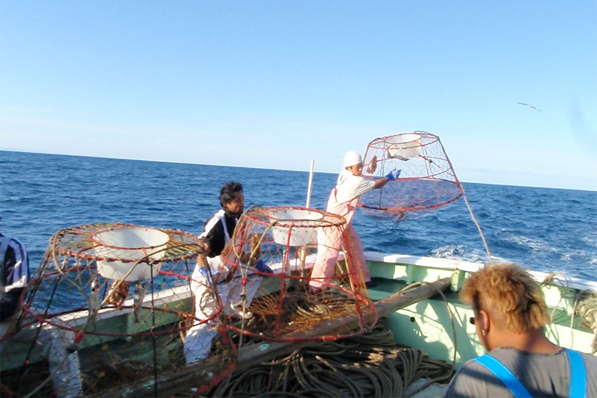
История
Корзины рыбака из Уодзу
Ловят бэни-дзуваи способом «кани-каго нава», крабовыми корзинами на канате: на дно опускают ловушки с наживкой. Этот способ придумали в префектуре Тояма, в портовом городе Уодзу.
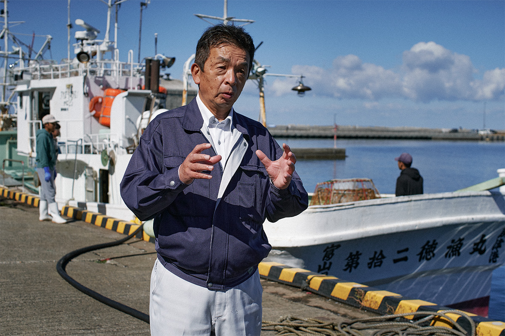
Раньше, рассказывает глава рыболовного кооператива Уодзу, бэни-дзуваи попадался случайно, вместе с другой рыбой в донные тралы и жаберные сети. О том, что в глубине живёт вкусный краб, красный ещё до варки, местные знали давно и называли его «акагани», красным крабом, или «татэямагани». Но распутывать его из сетей было долго, ноги отрывались, и хлопот было много. Тогда один рыбак из Уодзу сплёл вручную бамбуковую корзину, положил в неё наживку и опустил на глубину. Красных крабов набилось очень много, и с этой корзины, говорят, и начался лов «кани-каго нава».
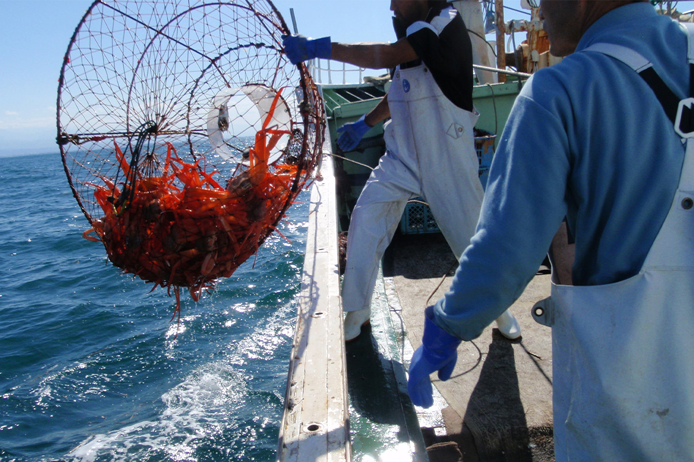
Марка
Почему краб так дорожит свежестью
С корзинами улов бэни-дзуваи стал расти примерно с середины 1950-х годов. Но у этого краба есть особенность: он очень быстро теряет свежесть. Он живёт в ледяной воде и держит в собственном теле ферменты, которые расщепляют белок пищи. Пока краб жив, это не страшно, но после его гибели ферменты начинают переваривать его же мышцы, и мясо буквально тает. Поэтому раньше почти весь улов съедали на месте, а в другие префектуры краб уходил только в виде консервов и другой переработки.
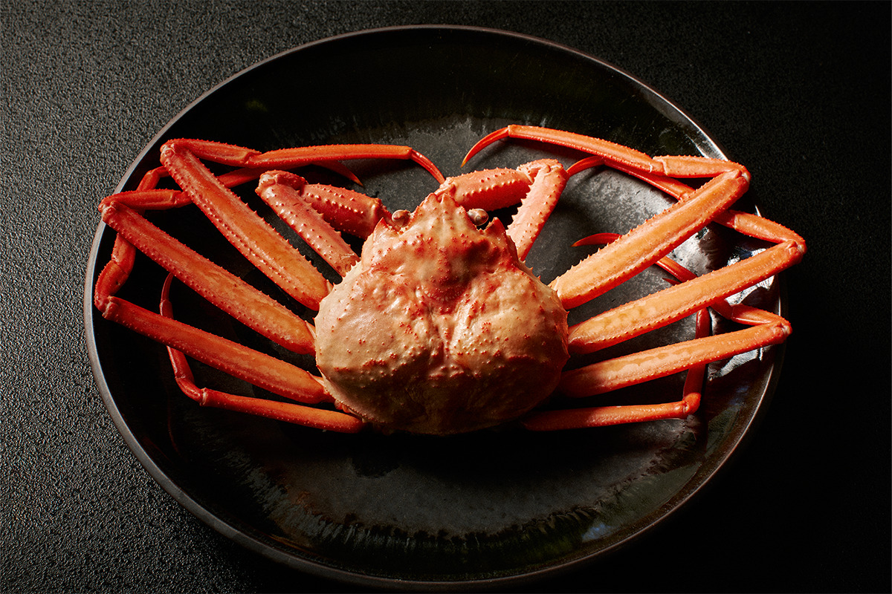
Слава о вкусе краба расходилась из уст в уста, и рыбаки, кооперативы и власти префектуры вместе взялись создать марку. Так появился «Коси-но акагани». Краба из залива Тояма, который проходит по весу, ширине панциря и другим требованиям, помечают биркой.
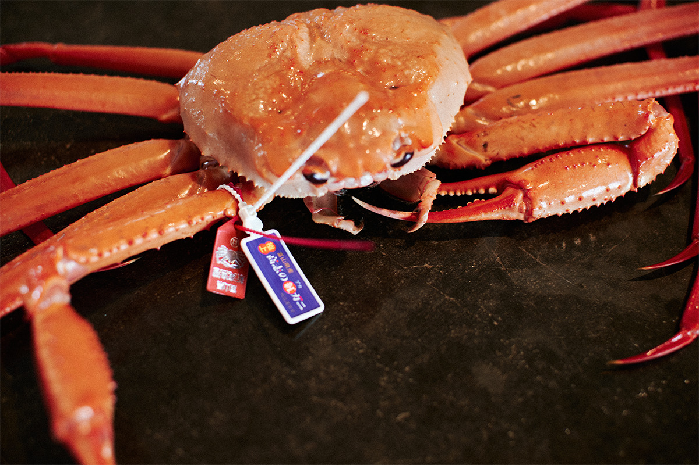
Рынок
Дневные торги Синминато
Порт Синминато в городе Имидзу известен высококлассным бэни-дзуваи. Здесь проходят редкие для Японии дневные торги, которые начинаются в 12:30. Глава рыболовного кооператива Синминато объясняет это просто: так краб попадает к покупателям свежее. От Синминато до места лова на судне всего час или полтора, это близко даже по меркам префектуры. Поэтому крабов успевают продать днём, и уже к вечеру того же дня они лежат в магазинах и ресторанах. Лов открывается 1 сентября, а 2 сентября в полдень бэни-дзуваи уже на рынке Синминато.
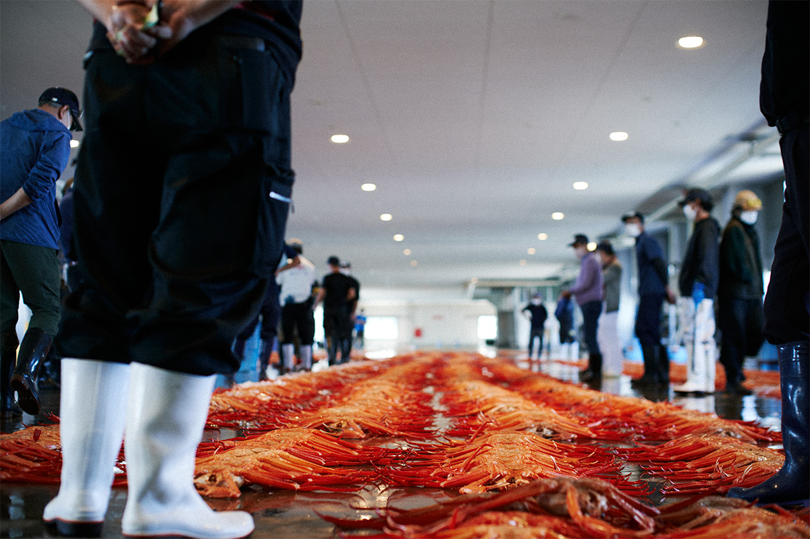
Среди портов залива Тояма Синминато называют «хамамаэ», портом прямо у места лова. Отсюда и главный секрет здешнего краба: от моря до тарелки проходят часы.
Бэни-дзуваи стал одним из символов префектуры Тояма, но в долгосрочной перспективе крабов становится меньше. Поэтому префектура, рыбаки и кооперативы взялись за охрану запасов. Ячейку корзин сделали крупной, 15 сантиметров, чтобы мелкие крабы уходили. Самок не ловят вовсе, как и самцов с панцирем 9 сантиметров и меньше. С июня по август, три месяца, лов закрыт, а в сезон рыбаки сами назначают выходные.
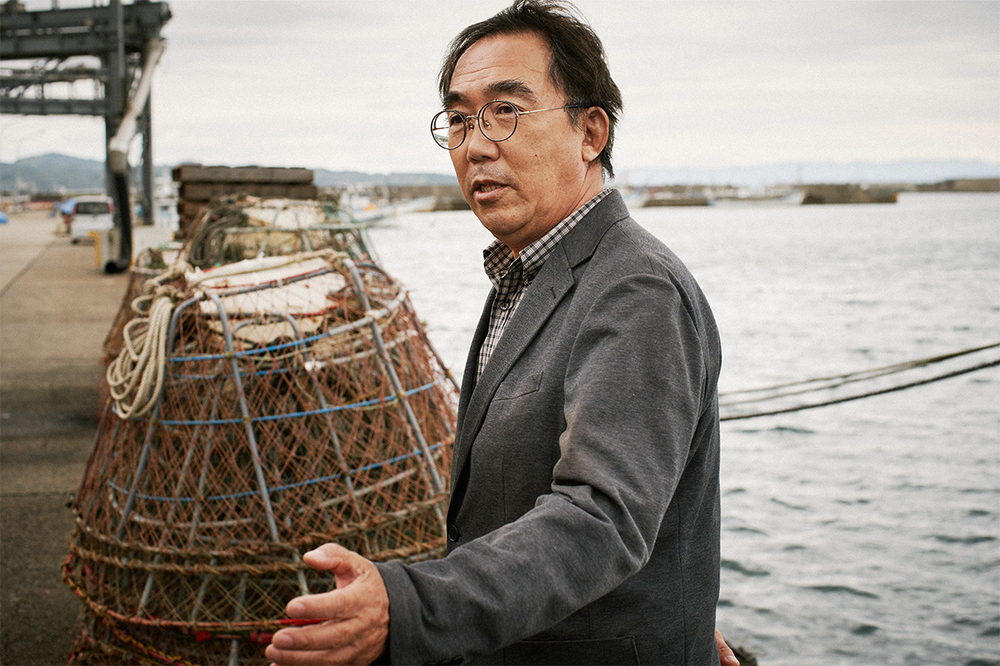
«В нашем кооперативе не выходят в море по воскресеньям и средам. Беречь запасы ради будущего, по-моему, наша ответственность»
глава рыболовного кооператива Синминато
Где есть
«Каппо Кавагути»: краб из большого аквариума
Ресторан «Каппо Кавагути» стоит рядом с портом Синминато. Хозяйка ресторана сама выбирает живых крабов на торгах и держит их в большом аквариуме в зале, чтобы подать как можно свежее. «Хочу, чтобы гости ели свежее», говорит она.
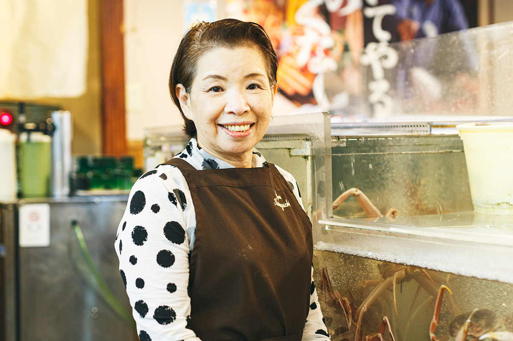
Если приехать в Тояму зимой, обязательно попробуйте сашими из бэни-дзуваи. Сырым краба можно есть только очень свежим, и в сашими лучше всего чувствуются его сладость и вкус.
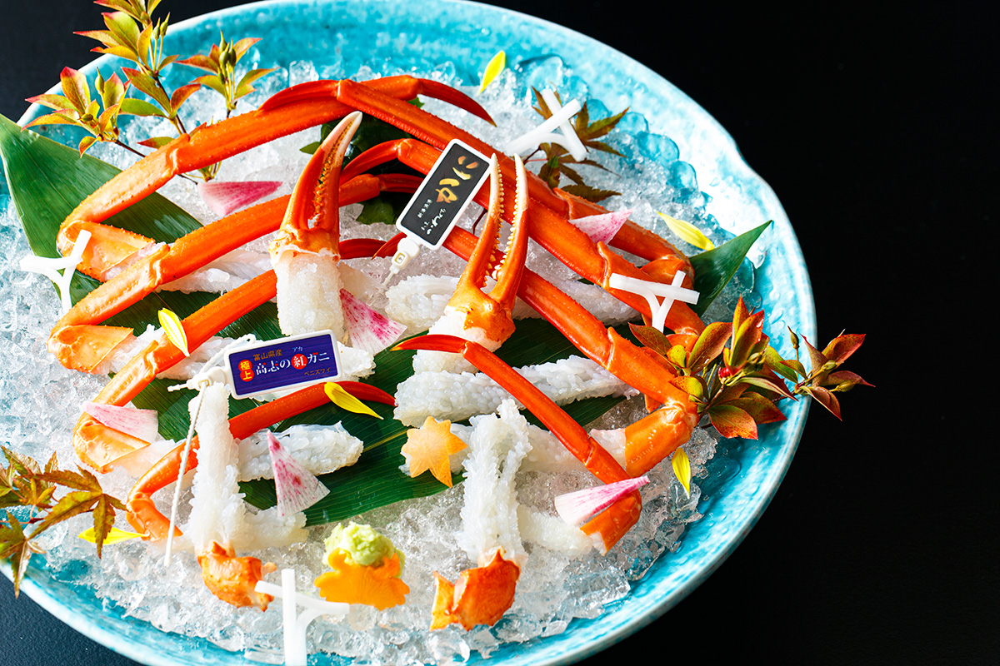
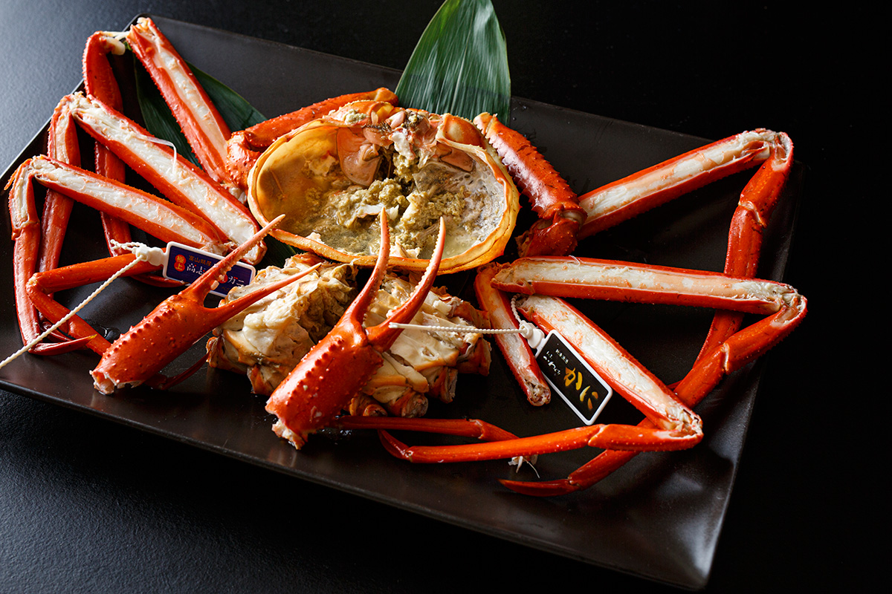
Плотного, мясистого краба хорошо и просто отварить: мясо упругое, сочное и очень сладкое. А на гриле бэни-дзуваи становится совсем другим: появляется аромат, мясо делается рассыпчатым, а вкус собирается и густеет.
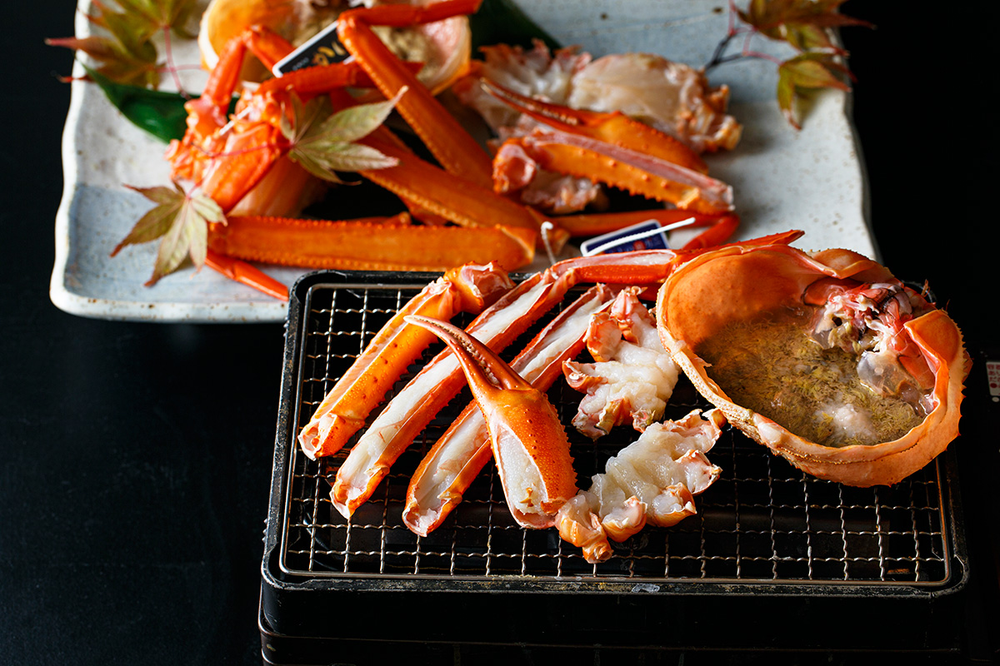
Где есть
«Каппо Мацуяма»: краб в бывшем квартале развлечений
«Каппо Мацуяма» стоит недалеко от порта Синминато, в бывшем квартале развлечений. Его хозяин и повар готовит вместе с женой, хозяйкой зала. В 2022 году ресторану шёл 38-й год.
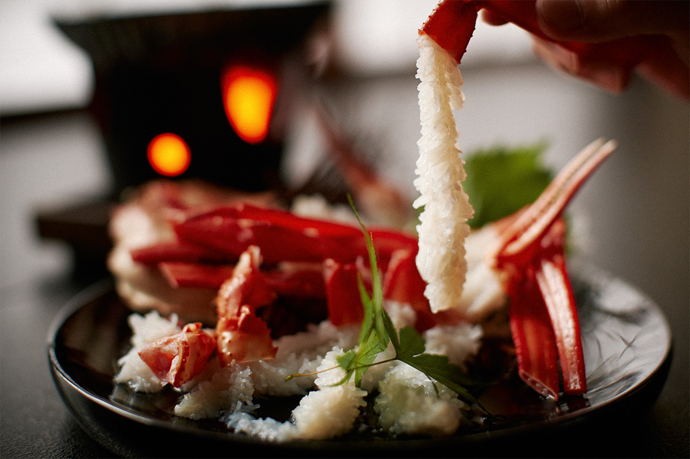
«Краба с дневных торгов мы варим как можно быстрее»
хозяин ресторана
Как только открывается сезон, ресторан заполняют гости, заказавшие столик со всей Японии. Больше всего любят курсы из местных морепродуктов, например «Сябу-сябу и сашими из бэни-дзуваи» из целого краба.
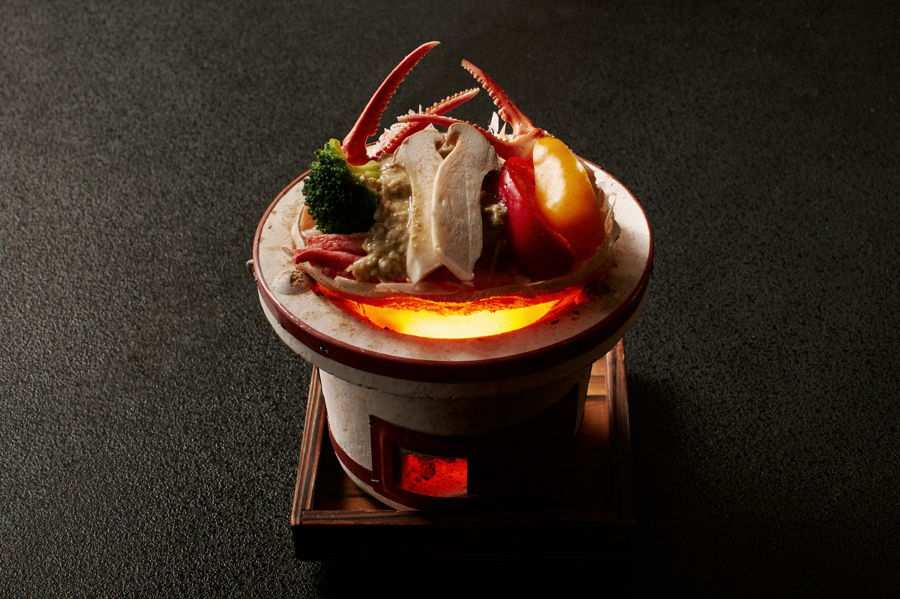
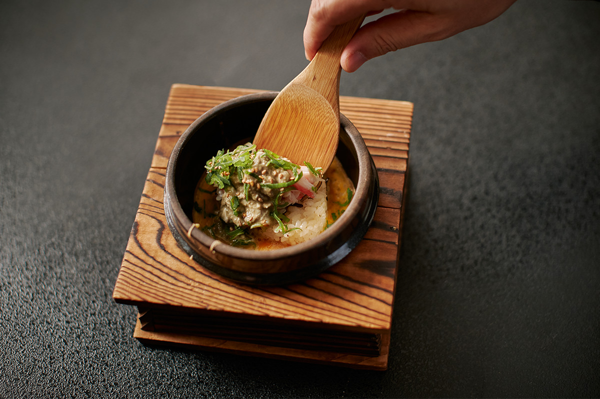
«В молодости мы просто старались принять как можно больше гостей. С годами хотим, чтобы к нам возвращались даже издалека. Пусть едят свежего краба и рыбу Синминато „яваява“, то есть не спеша»
хозяйка ресторана
Здесь умеют подстроиться под гостя: пожилой паре предложат разделить курс на одну порцию с целым крабом, для молодых сделают курс подешевле. За это многие сюда и возвращаются. Из ресторана уходят сытыми, и тепло хозяев тоже уносят с собой.
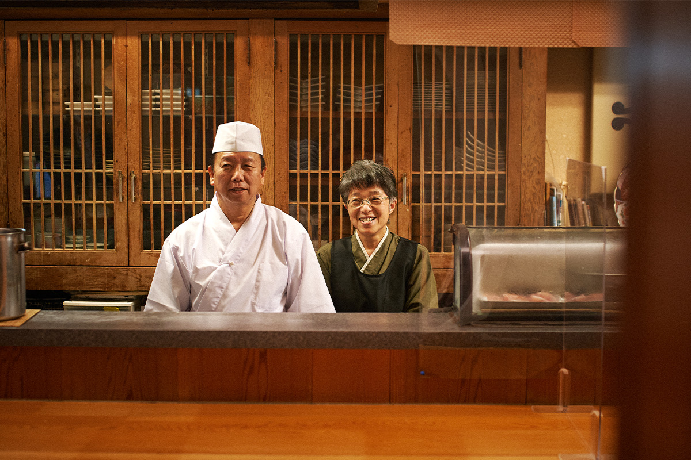
«Каппо Мацуяма»
- Адрес
- префектура Тояма, Имидзу, Татимати, 2-37
- Телефон
- +81 766-82-4100
- Часы работы
- 11:30–14:00, 17:00–22:00 (по предварительному заказу)
- Выходные
- среда
Шеф
«Хамадая» в Уодзу: краб и сакэ Тоямы
Ресторан «Хамадая» у станции Уодзу стоит на улице, где одна закусочная за другой. Его открыл в 2011 году, в 27 лет, внук и сын хозяев старого ресторана «Хамадая» в Уодзу, третье поколение семьи. Шеф окончил кулинарную школу в Токио и прошёл там выучку. Вернувшись, он решил готовить из продуктов Тоямы то, что может сделать только он сам: ездит к производителям, а иногда и помогает им с урожаем.
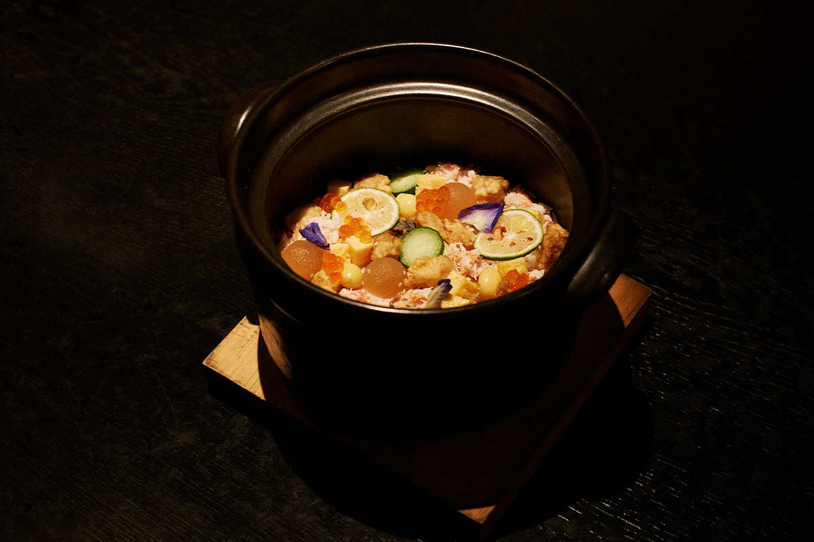
Бэни-дзуваи шеф ценит за сочность и называет его продуктом, который собирает вкус блюда воедино. Обычно краба варят или жарят, но здесь его готовят с выдумкой.
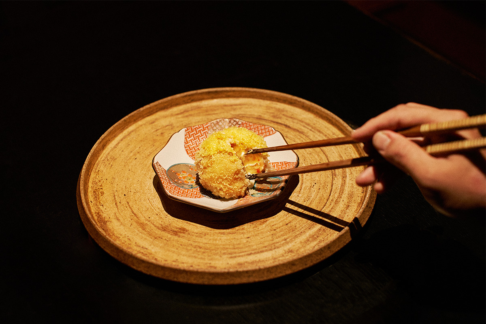
«Многие, возможно, думают, что бэни-дзуваи дешевле и хуже обычного дзуваи. Но с ним всё не так просто»
шеф «Хамадая»
Многие гурманы возвращаются сюда именно ради таких неожиданных блюд. К тому же шеф стал самым молодым обладателем звания «почётного кикидзакэси», высшей ступени сертификата знатока сакэ. Он сам объезжает винокурни и подбирает к блюдам сакэ из префектуры Тояма.
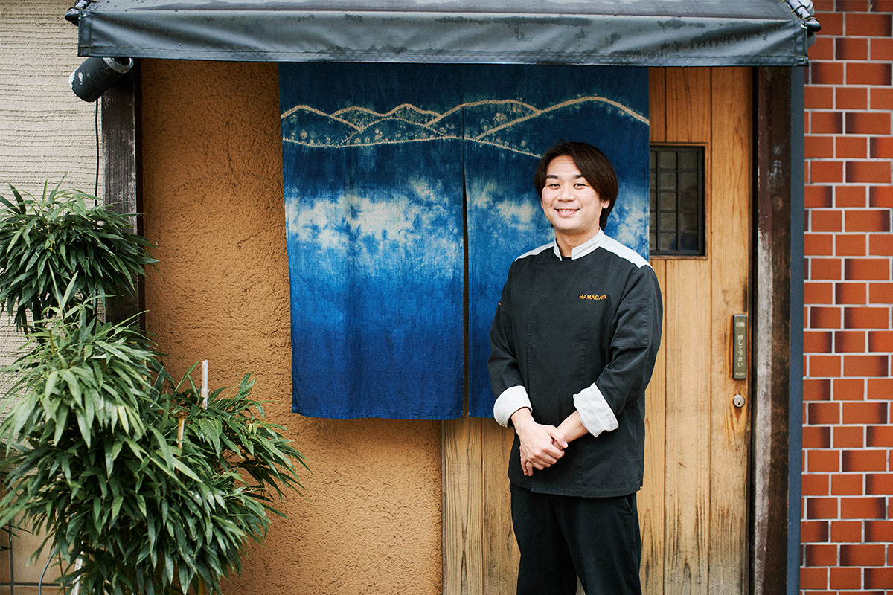
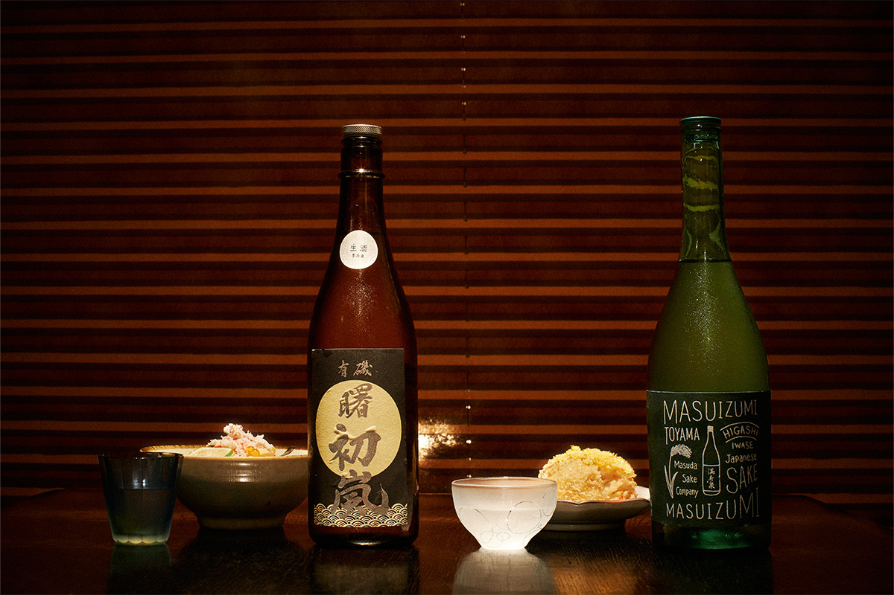
«Хамадая», ресторан у станции Уодзу
- Адрес
- префектура Тояма, Уодзу, Сякадо, 1-15-8
- Телефон
- +81 765-23-5775
- Часы работы
- 17:30–23:00 (последний заказ 22:30)
- Выходные
- понедельник
Фото: Синпэй Фукадзава, Хидэюки Хаяси.